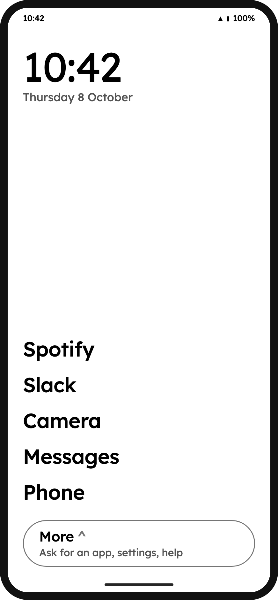
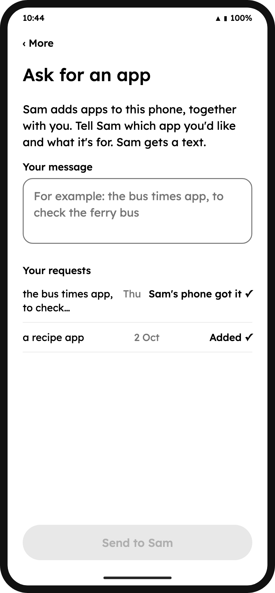
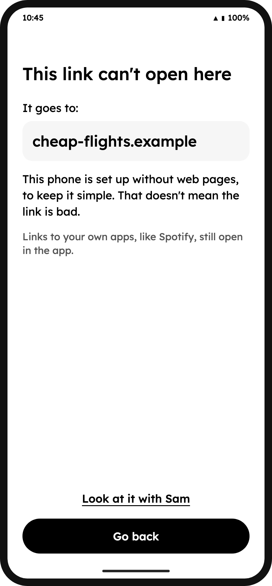
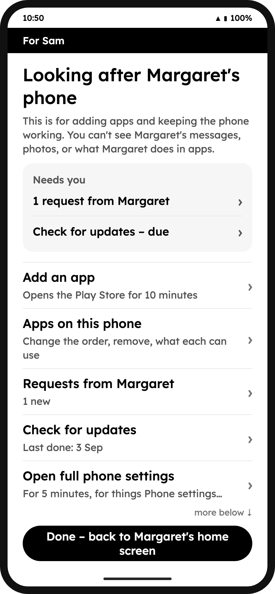
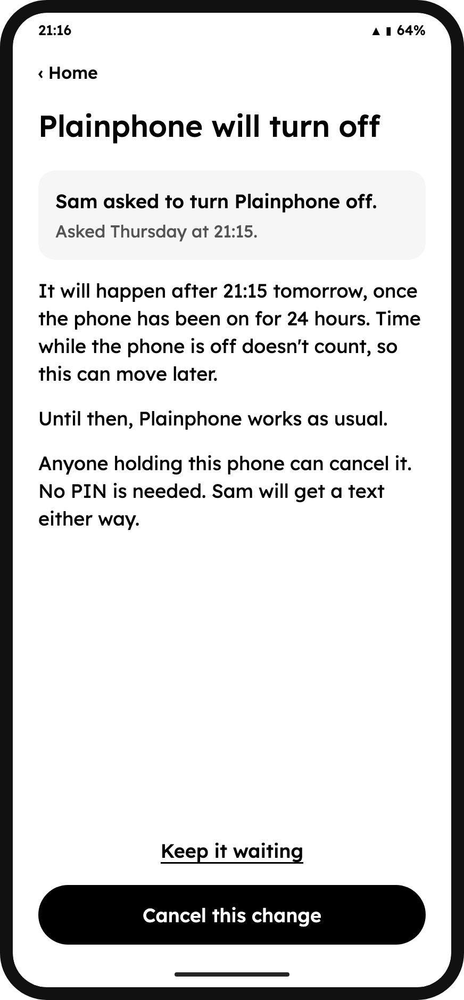

A calm phone.
Plainphone turns an ordinary Android phone into a calm phone that only opens the apps you and someone you trust have chosen.
Plainphone is early and still being built. There’s nothing to download yet.

Who it’s for
People who want a simpler phone
Someone who finds a smartphone tiring, distracting or confusing, but still needs a few real apps: maps, music, the bank, the family chat. No tinkering needed.
The person who helps them
A partner, a grown-up child or a good friend. Plainphone calls them the trusted person. They sit down with the phone, together, to add an app or keep it up to date.
Or you, for yourself
You can look after your own phone, too. Plainphone adds waits and limits that make giving in to a tempting app harder. It can’t stop you, and it says so.
It isn’t built for watching someone. It’s built for keeping a phone simple, together.
What it looks like
Black, white and grey. Big words, no icons, nothing that asks for your attention.
-

Ask for an app. Say which app you’d like and what it’s for. Your trusted person gets a text.
-

A link that can’t open. General browsing is blocked. Some links can open approved apps, and some approved apps have web pages inside them. You can look at blocked links together later.
-

For the trusted person. Adding apps and keeping the phone working, behind a PIN. Plainphone doesn’t show them your messages or photos.
-

A change is waiting. Big changes normally wait at least 24 hours with the phone on. While a change is waiting, anyone holding the phone can cancel, no PIN needed.
Design mockups using the app’s real wording. Margaret and Sam are example names.
The promise
Who holds the keys, and what they can and can’t do, in plain words.
-
A person you trust holds the keys. Not a company.
Changes happen on the phone itself, with your trusted person’s PIN. There’s no website where someone changes your phone from far away.
-
App choices, not a window into your life.
Your trusted person can add and remove apps. Plainphone doesn’t give them your messages, photos or a record of what you do in apps. Someone holding an unlocked phone can still see what’s on it.
-
They stay with the phone while making changes.
When opening Settings or checking for app updates, your trusted person stays with the phone until they tap Done and Plainphone confirms it is ready to hand back. If Plainphone stops running during that time, access may stay open until a helper fixes it.
-
Big changes wait, so there’s time to say no.
Changes like turning Plainphone off normally wait at least 24 hours with the phone on. Time while it’s off doesn’t count. While a change is waiting, anyone holding the phone can cancel. Plainphone tries to text each trusted person about the change. In supervised mode, a trusted person can use their recovery code to skip the wait.
-
9-1-1, calls and texts come first.
Plainphone is designed to keep emergency calls, incoming calls, texts and emergency alerts available. Device or network failures can still interrupt them.
-
No Plainphone account, server or tracking.
Plainphone runs on the phone. Requests travel as ordinary text messages; your carrier’s usual charges may apply. Plainphone doesn’t send us your activity. Android and approved apps can still use their own accounts and collect data. Plainphone can’t stop that.
-
Normal turn-off keeps your photos and messages.
A successful turn-off restores an ordinary Android phone without erasing your photos or messages. A serious failure may need a factory reset; anything not backed up can be lost.
-
Honest about the limits.
Before anyone agrees to use it, Plainphone writes down, in plain words, what it can’t stop.
Help build it
Plainphone is open source and built in the open. If you write Android code, design for people who find technology hard, test on older phones, or just have good ideas about calm phones, we’d love your help.